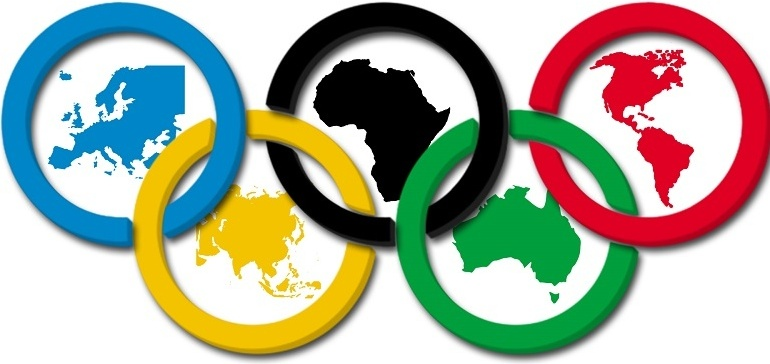
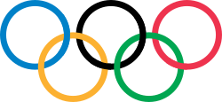

|  | |
Olimpiai játékokMagyar Olimpiai Bizottság |
Olimpiai JátékokAz olimpiai játékok több sportágat magába foglaló nemzetközi eseménysorozat az ókori olümpiai játékok mintájára. Az újkori olimpiai játékok sora – az ókori olümpiák mintájára, 1503 év elteltével – 1896-ban Athénban kezdődött el,[1] és minden olimpiád elején tartották meg. Az eseménysorozatot egészen 1920-ig csak nyáron rendezték meg, az első téli olimpiát 1924-ben Franciaország Chamonix nevű városa szervezhette.[2] A nyári és a téli olimpiai játékokat 1992-ig egy éven belül rendezték,[3] 1994-től a nyári játékok az olimpiád első, a téli játékok pedig az olimpiád harmadik évében vannak.  Az első ókori olümpiai játékokat (görögül: Ολυμπιακοί Αγώνες [olimpiákoj agónész] (segítség·infó)) i. e. 776-ban tartották a görögországi Olümpiában,[4] és egészen i. sz. 393-ig rendezték meg, de ekkor Nagy Theodosius császár a kereszténység végleges megszilárdítása érdekében minden pogány rendezvényt betiltott, így az olümpiai játékokat is beszüntette – közel 11 évszázados fényes múlt után.[5] Az olimpiai játékok felélesztésének a gondolata Panajótisz Szúcosz görög költő és újságíró fejében fordult meg először 1833-ban, amit a „Halottak párbeszéde” című versében is megfogalmazott. Az első újkori, olimpiára emlékeztető rendezvény Evangélisz Zápasz anyagi támogatásával 1859-ben jött létre. Ő állta a Pánhellén Stadion felújítási költségeit is, és ott rendezték meg a hasonló 1870-es és 1875-ös játékokat is. Ezt szerte a világon újságokban és közleményekben tudatták az emberekkel, a London Review például azt írta, hogy „az olümpiai játékok, melyeket évszázadokra abbahagytak, ismételten elkezdődtek! Valóban meglepő hír…, hogy a klasszikus ókori játékokat Athén mellett újra felébresztették.” |
Olimpiai játékok Peking 20222022. február 4. – 2022. február 20. |
|